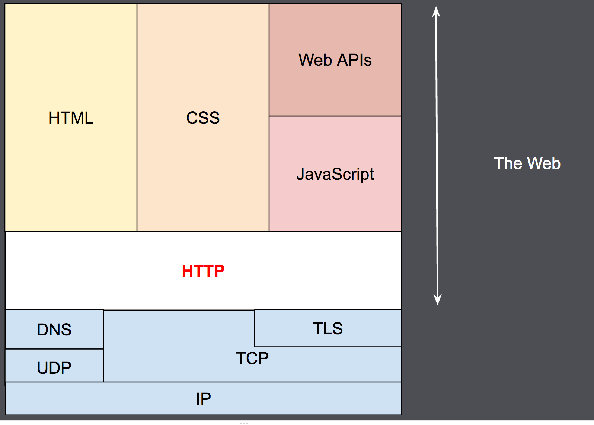

HTTP原理分析
本文最后更新于：2024年3月5日 凌晨
版权归作者所有, 转载请保留该部分声明。
本文作者：EtcFly
原文地址：https://etcfly.top
简介
20 世纪 90 年代，HTTP 作为一套可扩展的协议被设计出来，并随时间不断演进。HTTP 是一种应用层的协议，通过 TCP，或者是 TLS——一种加密过的 TCP 连接——来发送，当然，理论上来说可以借助任何可靠的传输协议。受益于 HTTP 的可扩展性，时至今日，它不仅可以用来获取超文本文档，还可用来获取图片、视频或者向服务端发送信息，比如填写好的 HTML 表单。HTTP 还可以用来获取文档的部分内容，以便按需更新 Web 页面。对于HTTP， 其一般具备如下特性:
- 简约性
大体上看，
HTTP被设计得简单且易读，尽管在HTTP/2中，HTTP消息被封装进帧（frame）这点引入了额外的复杂度。HTTP报文能够被人读懂并理解，向开发者提供了更简单的测试方式，也对初学者降低了门槛。
- 可扩展
在
HTTP/1.0中引入的HTTP标头（header）让协议扩展变得非常容易。只要服务端客户端之间对新标头的语义经过简单协商，新功能就可以被加入进来。
- 无状态性
HTTP是无状态的：在同一个连接中，两个执行成功的请求之间是没有关系的。这就带来了一个问题，用户没有办法在同一个网站中进行连贯的交互，比如在电商网站中使用购物车功能。尽管HTTP根本上来说是无状态的，但借助HTTP Cookie就可使用有状态的会话。利用标头的扩展性，HTTP Cookie被加进了协议工作流程，每个请求之间就能够创建会话，让每个请求都能共享相同的上下文信息或相同的状态。


数据结构
HTTP通用缓存结构:
1 | |
基础的缓存结构, 发送和接受数据都是使用公共缓存, 其次, 所有的数据也是在公共缓存中解析, 因此不需要数据拷贝, 效率较高。
HTTP回话结构:
1 | |
会话session维护了最基础的socket以及tls信息, 同时还有一个pbuf公共缓存用于http的发送和接受, http_resp_t结构是http请求后服务端返回信息解析后的结构化数据。
HTTP请求数据结构:
1 | |
数据结构http_req_t作为http的入参结构, 由上层提供参数, 并存储在该结构化数据中, 由http代码转换为http协议各部分, 如(http首部, 起始行, 实体等等)。注意: 该部分并没有与http的session结构关联, 因此一次只能进行一条HTTP连接请求。
HTTP响应数据结构:
1 | |
相关数据结构图:
请求模式
正常模式

chunked模式
chunked全名(Chunked transfer encoding分块传输编码), 是HTTP/1.1中提供的一种技术, 其允许客户端在不知道服务端数据大小的情况下请求服务端数据,如当出现类似ipc类摄像头数据, 客户端请求时无法知道数据的具体长度, 可以使用chunked模式。
优点:
HTTP分块传输编码允许服务器为动态生成的内容维持HTTP持久链接。通常，持久链接需要服务器在开始发送消息体前发送Content-Length消息头字段，但是对于动态生成的内容来说，在内容创建完之前是不可知的。- 分块传输编码允许服务器在最后发送消息头字段。对于那些头字段值在内容被生成之前无法知道的情形非常重要，例如消息的内容要使用散列进行签名，散列的结果通过
HTTP消息头字段进行传输。没有分块传输编码时，服务器必须缓冲内容直到完成后计算头字段的值并在发送内容前发送这些头字段的值。 HTTP服务器有时使用压缩 （gzip或deflate）以缩短传输花费的时间。分块传输编码可以用来分隔压缩对象的多个部分。在这种情况下，块不是分别压缩的，而是整个负载进行压缩，压缩的输出使用本文描述的方案进行分块传输。在压缩的情形中，分块编码有利于一边进行压缩一边发送数据，而不是先完成压缩过程以得知压缩后数据的大小。
Transfer-Encoding是逐跳标头，应用于两个节点之间的消息，而不是资源本身。多节点连接的每个段可以使用不同的Transfer-Encoding值。如果要压缩整个连接上的数据，请改用端到端标头Content-Encoding， 存在如下类型:
1 | |
chunked: 数据以一系列块的形式发送。在这种情况下，标头Content-Length被省略，并且在每个块的开头，您需要以十六进制格式添加当前块的长度，后跟“\r\n”，然后是块本身，最后跟另一个“\r\n”。终止块是常规块，但其长度为零。接下来是预告片，它由一系列（可能是空的）标头字段组成。
chunked请求
2054以及3000表示接受的长度, 后面为接受的内容。
1 | |
断点续传模式
断点续传是HTTP的一项功能, 它允许客户端仅请求资源的一部分；当客户端想要恢复暂停（或中断）的下载时，或者当他们使用支持随机访问的媒体播放器时（即寻找视频中的特定点而不必缓冲该点之前的部分）时，这些请求特别有用。
因此，断点续传请求的主要好处是节省带宽。当用户只想观看视频的一部分时，只下载需要的部分并跳过不需要的部分是有意义的。类似地，在 PDF 文件中，如果我们只对特定页面（这是较大 PDF 文件的一部分）感兴趣，则字节范围请求感知客户端可以显式请求该页面，并在需要时稍后加载文档的其余部分。

原理
为了协商此类请求，服务器必须通告其提供部分内容的意愿, HTTP Accept-Ranges响应标头就 是服务器用来通告其支持来自客户端的部分文件下载请求的标记。该字段的值指示可用于定义范围的单位。在存在标头的情况下Accept-Ranges，浏览器可能会尝试恢复中断的下载，而不是尝试重新启动下载。
1 | |
如:
1 | |
range-unit可以是bytes
bytes: 表示服务端接受下载指定部分内容。此时客户端发送头部添加Content-Range: bytes 0-8/25546, 表示下载25546Byte字节中的0-8字节, 也可以在其中包含content-length: 9表示长度为9Byte。
1 | |
none: 不支持范围请求
以此我们就知道是否支持断点续传。
安全和认证
由于通过http进行交互, 而http属于文本协议, 数据以明文传输, 这就会导致客户端和服务端进行交互时数据是不安全的, 因此需要采用tls加密。其次, 还存在如下问题:
- 数据如何防篡改
在进行
api交互时, 每条消息加入消息认证码, 对传输的数据进行md5, 如果是参数还可以对参数进行排序, 添加特殊字符串一起进行md5运算, 最后得到的md5值与服务端和客户端共享的authkey进行md5, 由于authkey只有通讯双方知道, 因此可以确保消息没用篡改。
- 如何防止重放攻击
可以在消息中加入时间戳, 当请求时间在非法时间范围内认为是非法请求,服务端拒绝处理, 同样，时间戳也加入消息认证码的计算(
sign)。第三方无法篡改。
如果对数据安全要求较高的情况下, 应用层同样可以对数据进行加密(如aes128bits),对加密后的数据, 我们需要进行base64相关操作, 避免数据乱码影响http解析, 同时对数据进行sign。实际接受数据格式如下:
1 | |
e: 是否加密(true/false)t: 当前时间戳sign: 消息认证码(result内容以及key,时间戳等进行md5的结果)result: 通过aes加密后的消息经过base64的结果